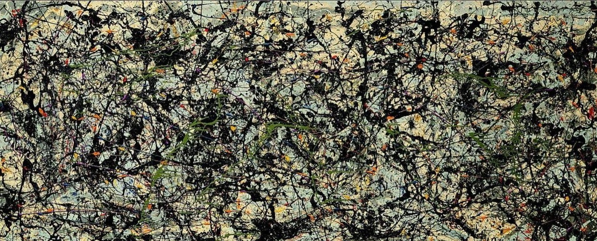

波洛克 Jackson Pollock – 1950年28号 Number 28
文章目录
 图1. Jackson Pollock, Number 28, 1950, Enamel on canvas, 173 x 266.7 x 3.8 cm, The Muriel Kallis Steinberg Newman Collection
图1. Jackson Pollock, Number 28, 1950, Enamel on canvas, 173 x 266.7 x 3.8 cm, The Muriel Kallis Steinberg Newman Collection
早期作品
波洛克成长的年代，是美国文化海纳百川、蓬勃发展示的年代，大量从两次世界大战的欧洲来避难的艺术家们带着文化的火种来美国生存，包括代表抽象主义的蒙德里安和代表超现实主义的达利（此外，还有大量的科学家，如吐舌头的爱因斯坦）。 经过约三四十年的感染和渗透，纽约有替代欧洲的巴黎和伦敦成为新一代的全球艺术中心的苗头。
在40年代初（1942年~1946年）波洛克的作品通常借助某一主题展开，创作过程中将主题最大限度抽象化，用大面积色块、高饱和度的颜料挥洒在画布上；同时又用线条将色块分隔开，赋予抽象主题相关的具象表达。 早期典型作品如《男人和女人Male and Female》、《Stenographic Figure》、《月光女神The Moon-Woman》、《The She-Wolf》，都明显带着抽象与具象的关联与矛盾。
图2. Jackson Pollock, Male and Female, 1942, Oil on canvas, 73 1/4 x 49 in, Philadelphia Museum of Art
图3. Jackson Pollock, Stenographic Figure, 1942, Oil on canvas, 40 x 56 in, The Museum of Modern Art, New York
图4. Jackson Pollock, The Moon-Woman, 1942, Oil on canvas, 69 x 43 in, Peggy Guggenheim Collection, Venice
图5. Jackson Pollock, The She-Wolf, 1943, Oil, gouache, and plaster on canvas, 41 7/8 x 67 in, The Museum of Modern Art, New York
图6. Jackson Pollock, The Key, 1946, Oil on canvas, 59 x 84 in, The Art Institute of Chicago
图7. Jackson Pollock, The Tea Cup, 1946, Oil on canvas, 40 x 28 in, Collection Frieder Burda, Baden-Baden
通过对感兴趣的主题进行艺术化表达，波洛克一直在思考怎样才能表达内心的自由奔放，那自由从思绪中疯狂跑出脑袋，附在画笔上，狂奔在画布上。
1943年波洛克受收藏家Peggy Guggenheim的委托创作一幅装饰新家的壁画，提出作品邀约时，波洛克还名不经传。 原本Peggy是需要他直接绘到她新家的墙上，幸好另一位艺术评论家Marcel Duchamp建议波洛克使用画布。 当波洛克面对超大尺寸画布时，将创作的主题“模糊”掉，再将颜料的色块和线条“模糊”掉，结果横空出现一幅极惊艳的杰作《Mural》！
图8. Jackson Pollock, Mural, 1943, Oil on canvas, 247 x 605 cm, University of Iowa Museum of Art, Iowa City
也许你会问： 这样杂乱的线条，毫无章法的色调，他到底表达的是什么？看不懂！不明白！
请闭上眼，想象洛波克就在你面前： 墙上空的画布，地板上有几个颜料罐，几支粗细的画笔。 波洛克嘴里叼着香烟，他已经站立很久，烟已经快燃尽熄灭。 突然，他充满热情地挥动着画笔，黑色，再拿起另一根画笔，蓝色，再是粉色，黄色，红色，手上已经拿不了这么多画笔，干脆嘴上也咬住一支。 画笔不停不停地在画布上舞蹈，他用尽全部的能量，直到最后一丝力气！ 波洛克躺在地板上，看了一眼画布，幸福地入眠！ 梦里，他悟出他爱的是创作作品过程中的自由，而不是创作出的作品。 多年后，是否因这个梦，让他找到了滴画创作法？
洛波克打破欧洲作品中定义的超现实主义和抽象主义，将超现实和抽象提高到质变的层次，从此，美国现代艺术翻启到新的篇章。 当艺术评论家Clement Greenberg看到《Mural》，他写道:
我只看了一眼，我想：“那就是真正的艺术”。同时我也知道Jackson会成为这个国家培养出的最优秀的画家。
在创作完《Mural》之后，波洛克偶尔再抓住类似的创作灵感，在1946年连续创作了《Eyes in the Heat》和《Shimmering Substance》。
图10. Jackson Pollock, Eyes in the Heat, c. 1946, Oil on canvas, 54 x 43 in, Peggy Guggenheim Collection, Venice
 图11. Jackson Pollock, Shimmering Substance, c. 1946, Oil on canvas, 30 1/8 x 24 1/4 in, The Museum of Modern Art, New York
图11. Jackson Pollock, Shimmering Substance, c. 1946, Oil on canvas, 30 1/8 x 24 1/4 in, The Museum of Modern Art, New York
滴画时期
1946年波洛克与妻子 Lee Krasner搬到Long Land的海边Easthampton，Peggy（前文中《Mural》的委托人，极为欣赏波洛克）资助他们购买了乡间别墅。此后的几年，波洛克与妻子过着与艺术为伴的清静日子，神仙眷侣！
在1947年到1950间，是波洛克继续寻找自我的创作方式。 他抛开传统的画笔，用最原始、粗糙的工具，树枝、毛刷，甚至直接将颜料泼在画布上； 他扔掉了画架，将画布平铺在地板上，打破作画的界面限制； 他不仅仅是画家，他也是作品中的一部分；甚至创作的过程比创作的结果更加宝贵！
On the floor I am more at ease, I feel nearer, more a part of the painting, since this way I can walk around in it, work from the four sides and be literally `in' the painting. – Jackson Pollock, 1947.
毫无疑问，波洛克被推崇的作品大部分出于此段时期！
请抛开人间烟火，走进每一幅画，让时光走慢一点，也许你能像我一样，看到过去的自己和将来的自己。
图X. Jackson Pollock, Reflection of the Big Dipper, c. 1947, Oil on canvas, 111 x 91.5 cm, Stedelijk Museum, Amsterdam, Netherlands
 图X. Jackson Pollock, Lucifer, 1947, mixed technique, canvas, 267.9 x 104.1 cm
图X. Jackson Pollock, Cathedral, 1947, mixed technique, canvas, 89.06 x 181.61 cm, Dallas Museum of Art, Dallas, TX, US
图X. Jackson Pollock, Enchanted Forest, 1947, oil on canvas, 114.6 x 221.3 cm, Solomon R. Guggenheim Museum, New York City, NY, US
上面的作品还有着较实体化名字，渐渐地，波洛克把作品的所有（包括名字）都抽象化，打消大家对他作画主题的猜测，避免胡编乱造所谓的隐含寓意。
接下来的Number系列作品仿佛像是对大家嘶吼：为什么要限制艺术？我爱的就是自由！
 图X. Jackson Pollock, Number 5, 1948, canvas, 243.8 x 121.9 cm, Private collection
图X. Jackson Pollock, Number 5, 1948, canvas, 243.8 x 121.9 cm, Private collection
 图X. Jackson Pollock, Number 8, 1948, enamel & oil on canvas, 243.8 x 121.9 cm, Neuberger Museum of Art, Purchase, NY, US
图X. Jackson Pollock, Number 8, 1948, enamel & oil on canvas, 243.8 x 121.9 cm, Neuberger Museum of Art, Purchase, NY, US
 图X. Jackson Pollock, Summertime: Number 9A, 1948, mixed technique on canvas, Tate Modern, London, UK
图X. Jackson Pollock, Summertime: Number 9A, 1948, mixed technique on canvas, Tate Modern, London, UK
 图X. Jackson Pollock, Number 1, 1949, enamel on canvas, 160 x 259.1 cm, Museum of Contemporary Art (MOCA), Los Angeles, CA, US
图X. Jackson Pollock, Number 1, 1949, enamel on canvas, 160 x 259.1 cm, Museum of Contemporary Art (MOCA), Los Angeles, CA, US
图X. Jackson Pollock, Number 1 (Lavender Mist) , 1950, National Gallery of Art[2]
.jpg) 图X. Jackson Pollock, Number 1 (Lavender Mist) (detail), 1950, National Gallery of Art
图X. Jackson Pollock, Number 1 (Lavender Mist) (detail), 1950, National Gallery of Art
 图X. Jackson Pollock, Number 30 (Autumn Rhythm), 1950, 525.8 x 266.7 cm
图X. Jackson Pollock, Number 30 (Autumn Rhythm), 1950, 525.8 x 266.7 cm
.jpg) 图X. Jackson Pollock, Number 30 (Autumn Rhythm) (detail), 1950, 525.8 x 266.7 cm
图X. Jackson Pollock, Number 30 (Autumn Rhythm) (detail), 1950, 525.8 x 266.7 cm
 图X. Jackson Pollock, One: Number 31, 1950, 530.8 x 269.5 cm, Museum of Modern Art (MoMA), New York City, NY, US
图X. Jackson Pollock, One: Number 31, 1950, 530.8 x 269.5 cm, Museum of Modern Art (MoMA), New York City, NY, US
经过艺术经纪人Peggy的高超运作，波洛克在欧洲受到追捧，美国也为在自己文化艺术体系中成长的波洛克沸腾，名声、名望、金钱、闪光灯，向波洛克袭来。 波洛克的确是享受新的艺术创作，他在1948年《My Painting》里写道：[4]
When I am in my painting, I’m not aware of what I’m doing. It is only after a sort of ‘get acquainted’ period that I see what I have been about. I have no fears about making changes, destroying the image, etc. because the painting has a life of its own. I try to let it come through. It is only when I lose contact with the painting that the result is a mess. Otherwise there is pure harmony, an easy give and take, and the painting comes out well.
如果艺术家和艺术界相互各取所需，不过多干扰，也许能长久发展。但在特定的社会文化需求下，艺术家可能会被动“为国家代言”。
二战后经济崛起的美国，与共产主义的苏联冷战正酣；当时，不仅在经济力量上与苏联抗衡，更需要蓄积文化能量来树立并宣扬美国的自由与民主。 美国CIA分析出苏联式社会主义艺术的特点：
- 无产阶级：艺术是与工人密切相关，并试图理解工人 Proletarian: art relevant to the workers and understandable to them
- 典型特点：描绘的是人民日常生活中场景 Typical: scenes of everyday life of the people
- 实用主义：具象的场景 Realistic: in the representational sense
- 拥护：支持国家与党的目标 Partisan: supportive of the aims of the State and the Party
同时，CIA发现美国正出现一批先锋艺术家，包括Jackson Pollock, Robert Motherwell, Willem de Kooning 和 Mark Rothko。 他们的艺术作品风格偏向抽象主义、表现主义，与苏联的社会主义、现实主义简直是不谋而合的背向而驰、极度对立。 CIA鼓励他们创作，甚至推波助澜地“创造”属于美国的现代艺术家们，成本东西方冷战中的艺术武器。[5]
关于美国在40年代50年代的艺术，也可以看下一些专家的评说，了解文化、政治、社会这些因素间相互的依赖与牵绊。[6][7]
最后的生涯
如果猜到这悲伤的结局，大家一定会选择让波洛克慢点成功。 从1951年开始，波洛克很少创作滴画，或者说很少创作。他酗酒，他迷失，他不想清醒。 在1956年5月11号，他在酒精的召唤下离开了纷乱的世界，也许，这样的结尾正是波洛克式的结尾吧。
 图X. Jackson Pollock, Convergence, 1952, 393.7 x 237.5 cm, Albright-Knox Art Gallery, Buffalo, NY, US
图X. Jackson Pollock, Convergence, 1952, 393.7 x 237.5 cm, Albright-Knox Art Gallery, Buffalo, NY, US
 图X. Jackson Pollock, Blue Poles: No. 11, 1952, National Gallery of Australia
图X. Jackson Pollock, Blue Poles: No. 11, 1952, National Gallery of Australia
参考： [1] 画布上的壁画Mural, https://stanleymuseum.uiowa.edu/collections/american-art-1900-1980/jackson-pollock/mural/ [2] 薰衣草迷雾Number 1(Lavender Mist), https://www.jackson-pollock.org/lavender-mist.jsp [3] 南极Blue Poles: No. 11, https://www.jackson-pollock.org/blue-poles.jsp [4] My Painting, https://biography.yourdictionary.com/jackson-pollock [5] CIA的文化武器, https://www.independent.co.uk/news/world/modern-art-was-cia-weapon-1578808.html [6] 世艺网北大工作室，冯华年《战后美国艺术》，http://www.artda.cn/view.php?tid=1308&cid=40 [7] Katy Siegel《似是而非的抽象；美國的一九四零年代》，http://www.mplusmatters.hk/postwar/pdf/katysiegel_tch.pdf